About this Lesson:
In this lesson you will continue to build on your knowledge of Harmony's Drawing Tools. Begin by watching, completing and taking notes on the Brush, Pencil, Shapes video as you complete this lesson in Harmony. This lesson will demonstrate how to trace a character in Harmony by hand.
Lesson Duration: 4 hours
Harmony Topics:
- Light Table: Turns on the light table so you can see the previous and subsequent active layers in washed-out colours. It is useful for seeing the other layers when designing, animating or cleaning up your animation.
- Onion Skin: One of the most basic techniques of traditional animation is to place two drawings on a light table, put an animation sheet over them and draw between the outlines of the two drawings to make an in-between. In Harmony, this technique is streamlined with Onion Skin. Onion Skin is a powerful feature in Harmony that allows you to display the drawings surrounding your current drawing in washed, semi-transparent outlines so as to help you use them as reference to make your poses, your breakdowns and your in-betweens.
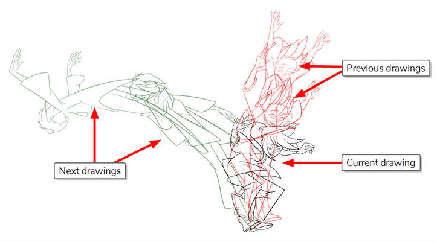
Task:
Part 1 - Designing a character using the Brush Tool
-
Launch Toon Boom Harmony.
-
In the Welcome Window, create a new scene called: Character Sketch
-
Browse and set the location to your Document Folder.
-
Keep the Camera Size at the default HDTV_1080p24 1080p (1920 by 1080 pixels and the frame rate is 24 frames per second)
-
Click Create Scene
-
Go to Harmony's main menu. Select File/Import/Images.
- Browse and find the CNote_sketch.jpg (from the Importing Images lesson).
- Click Open.
- In the Import Image window select the following:
- Create a Layer(s)/Create Layers Based on the File Name
- In Import Images, keep as Original Bitmap
- Set the Alignment to Fit.
- Leave the Transparency Alpha as Premultiplied with White as jpg do not have transparency embedded.
- Click Ok.
- Modify the transparency of CNote. Select the CNote layer and press T on your keyboard (enable Thumbnail). Modify the opacity in the layer 50%.
- Disable the thumbnail view of CNote layer and Lock the layer.
- Rename the Drawing layer to Brush.
- Select the brush tool
Hint: The shortcuts 1, 2, and space will come in handy to move, zoom in and out around your artwork.
- Place the brush on the Camera view. Hold down O on your keyboard to manipulate the size of the brush.
- Trace the CNote character using your brush tool. Trace the inside of CNotes' ears and his furry whiskers.
- With your brush stroke selected select Centerline Editor. Go to Tool Property and modify the smoothness of each line (The higher the number the smoother the line). This will correct any shakiness of the brush stroke. You can also manipulate the vector stops on the centerline of the art.
- Complete tracing Cnote using the Brush tool (not shown in video).
- Lock your Brush layer.
- Turn the visibility of the Brush layer off.
- Press CMD+S or CTRL+S to save your work!
- Go to File/Export/Layout Image. Save as Brush Tool Drawing in your Document folder.
- Submit the image below this lesson.
- Create a Drawing Layer, name it Pencil.
- Select the Pencil tool.
- Place the Pencil on the Camera view. Hold down O on your keyboard to manipulate the size of the stroke.
- Trace the CNote character using your Pencil tool. Begin by tracing the outside and inside of CNotes' ear.
- Use the Select tool to select your pencil stroke and go to Tool Property.
- Modify the thickness of the stroke by manipulating the Maximum Size.
- Select a different Pencil preset.
- Select a different Pencil texture.
- Go to the Pen Tool Editor and modify the end of your art line.
- Complete tracing Cnote using the pencil tool (not shown in video).
- Lock your Pencil layer.
- Turn the visibility of the Pencil layer off.
- Press CMD+S or CTRL+S to save your work.
- Go to File/Export/Layout Image. Save as Pencil Tool Drawing in your Document folder.
- Submit the image below this lesson.
Part 3 - Designing a character using the Shape Tool:
- Create a Drawing Layer, name it Rectangle.
- Select the Rectangle tool.
- Place the Rectangle Tool on the Camera view. Hold down O on your keyboard to manipulate the size of the stroke.
- Begin by placing a rectangle near the eyebrow.
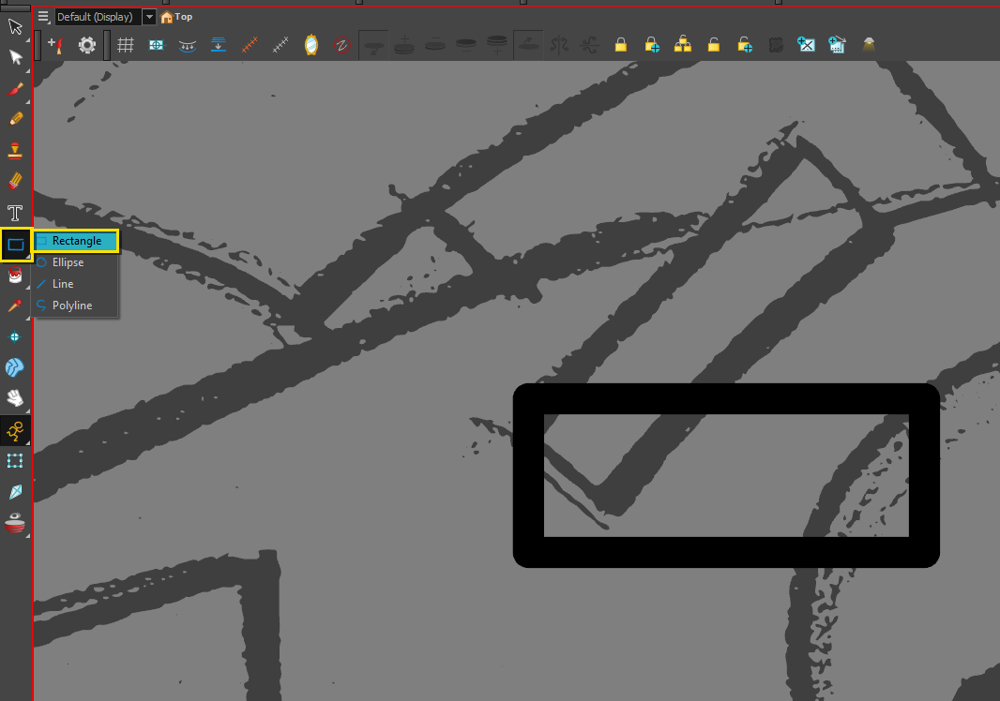
- Use the Contour Editor tool to reassign the rectangle points to position the rectangle over top the eyebrow.
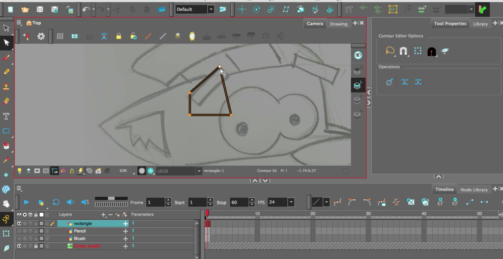
- Hold down shift on the keyboard to round out the edges of the rectangle.
- Repeat these steps to create the second eyebrow.
- Now select the Rectangle tool to draw the eyes. Draw a square (hold shift on your keyboard to maintain ratio) over one of the eyes.
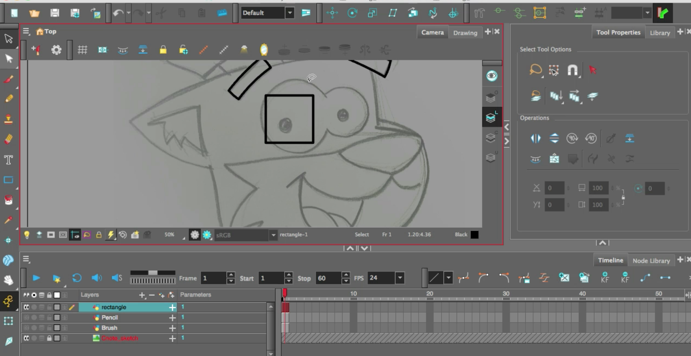
- Use the Select tool to rotate the square into a diamond position.
- Go to Contour Editor and align the points of the diamond to the edges of CNotes's eye.
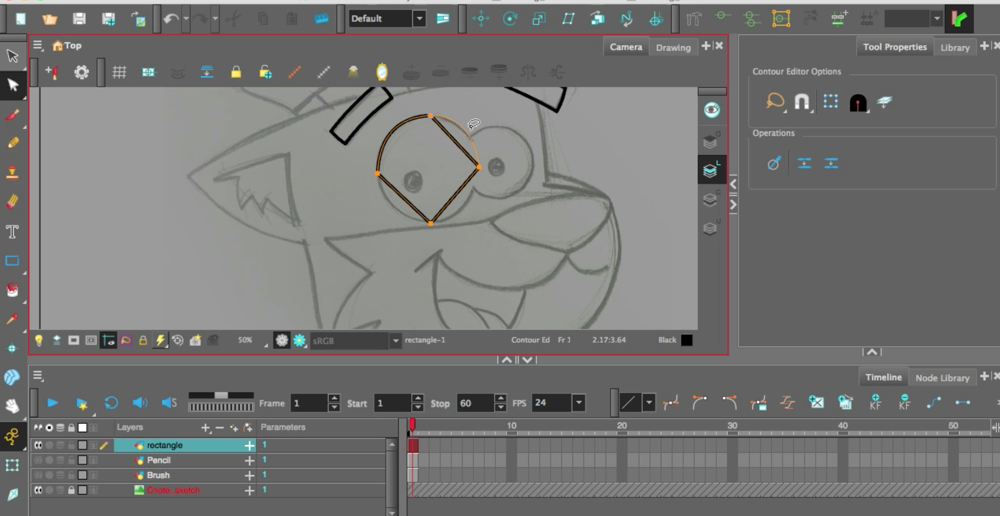
- Hold the Shift key and pull up the lines to round the diamond into an ellipse.
- Select one of the points to enable the Bezier handles. Manipulate and curve the lines.
- Use the select tool to select the eye art you just made. Hold the option (macOS) or alt (windows) key and pull a copy of the eye to the right. Resize the eye.
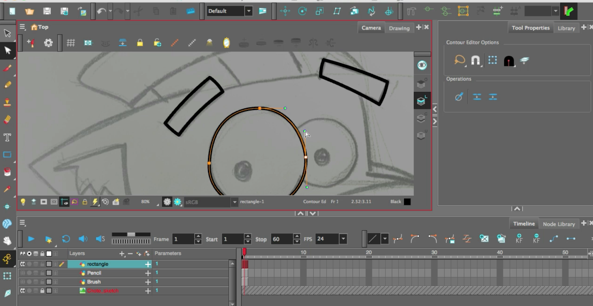
- Use the Contour Editor tool to clean up the second eye.
- Make sure the eyes are slightly overlapped.
- To add a little overlap between the eyes, select the line tool. Draw a little temporary line intersecting the curve line where the large eye overlaps the smaller eye.
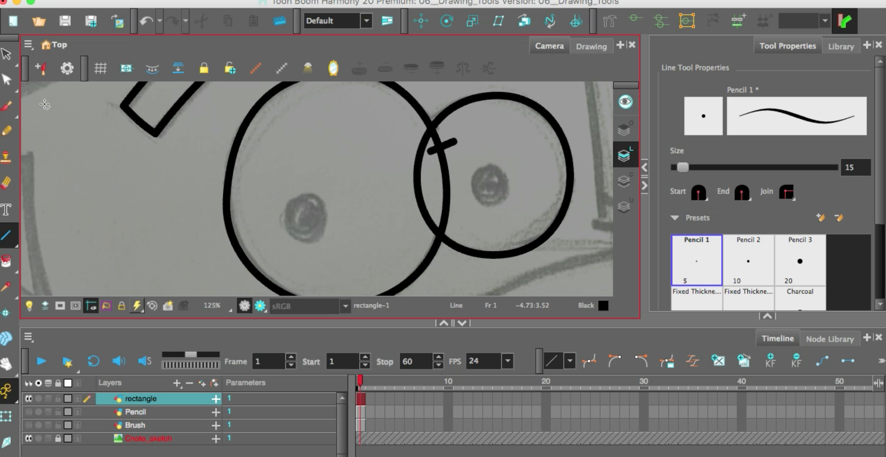
- Select the Cutter Tool and remove the line you do not want.
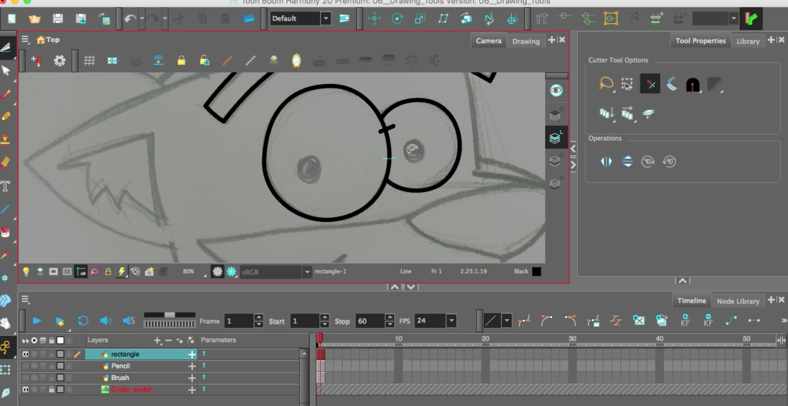
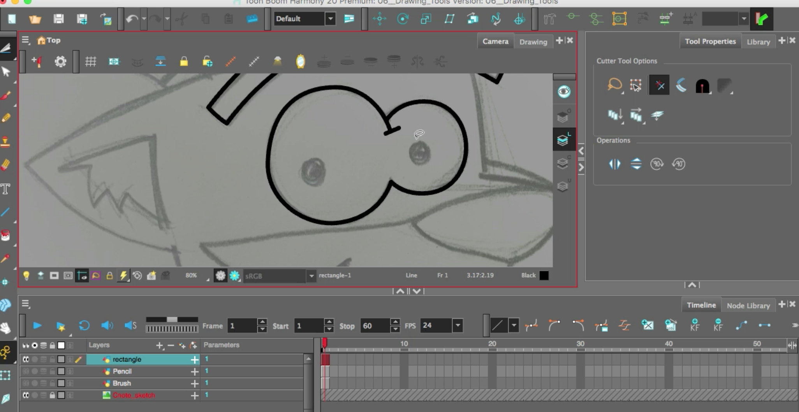
- Use the Select tool to delete the temporary line between the 2 eyes.
- Use the brush tool to draw the pupils.
- Move on to the CNotes ear
- Draw a Rectangle.
- Use Contour Editor to create the main triangle shape of the ear.
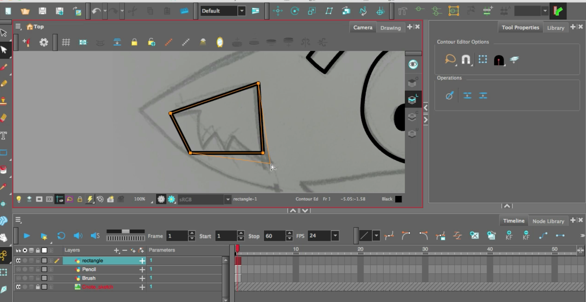
- You will need to add more points to the furry part of the inside ear. To do this, hold the CMD (macOS) or CTRL (windows) to add a new point to the line of the rectangle.
- Add and reposition more points to draw the ear.
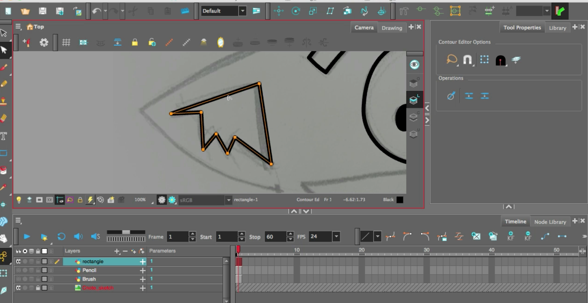
- Use the Contour Editor to curve the lines.
- Use the Line Tool to draw out the outside of CNotes face. Use the Contour Editor .
- In Tool Property and enable Snap to Contour to connect the lines.
- Overlap the Furry whiskers using the Line tool.
- Use the Cutter tool to remove excess lines.
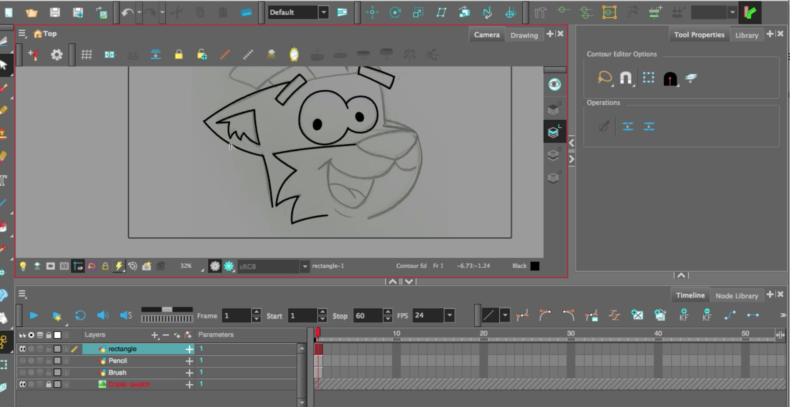
- Once you complete the drawing of CNote, go to Tool Property and add a grain to the line art.
- Press CMD+S or CTRL+S to save your work.
- Go to File/Export/Layout Image. Save as Shape Tool Drawing in your Document folder.
- Submit the image below this lesson.